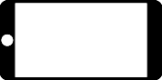

<ion-content>
  <div class="content">
    <p style="font-size: large">Drehen Sie ihr Handy zur linken Seite</p>

    <div>
      <p class="ion-text-center">momentane Ausrichtung:</p>
      
      
      
      
    </div>
    <div>
      <p class="ion-text-center">erwünschte Ausrichtung:</p>
      
    </div>
  </div>
</ion-content>
